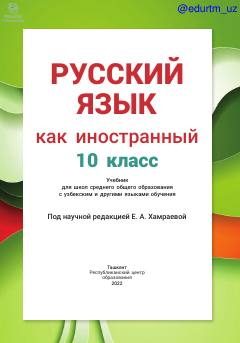

1R10-sinflar uchun rus tili darsligi va o'quv qo'llanmasi.
Ushbu darslik o'zbek va boshqa tillarda o'qitiladigan umumiy o'rta ta'lim maktablarining 10-sinf o'quvchilari uchun rus tilini chet tili sifatida o'rganishga mo'ljallangan. Kitobda o'qish, gapirish, tinglash va yozish kabi nutqiy faoliyat turlari ustida tizimli ravishda ishlash uchun materiallar, shuningdek QR-kodlar va loyihalar mavjud.